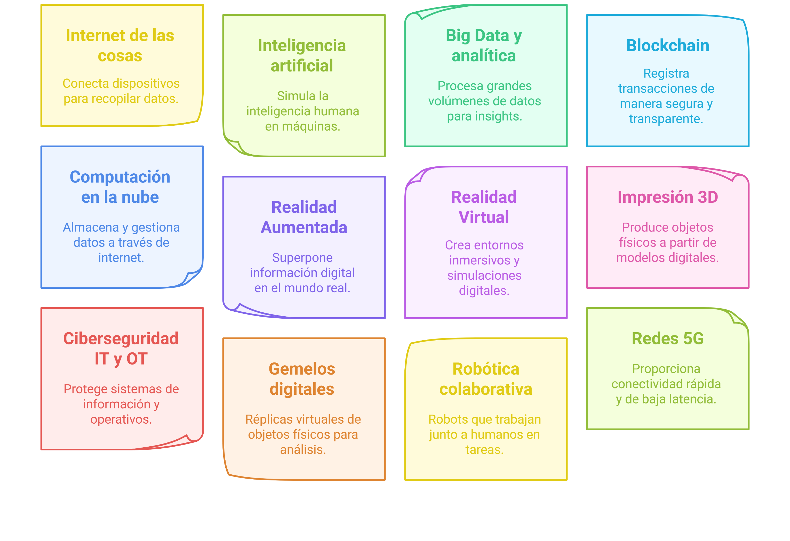
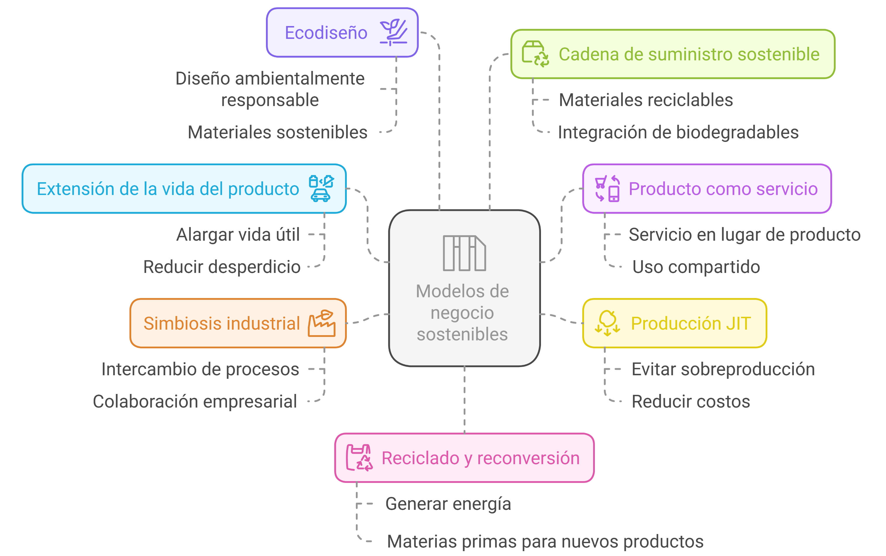
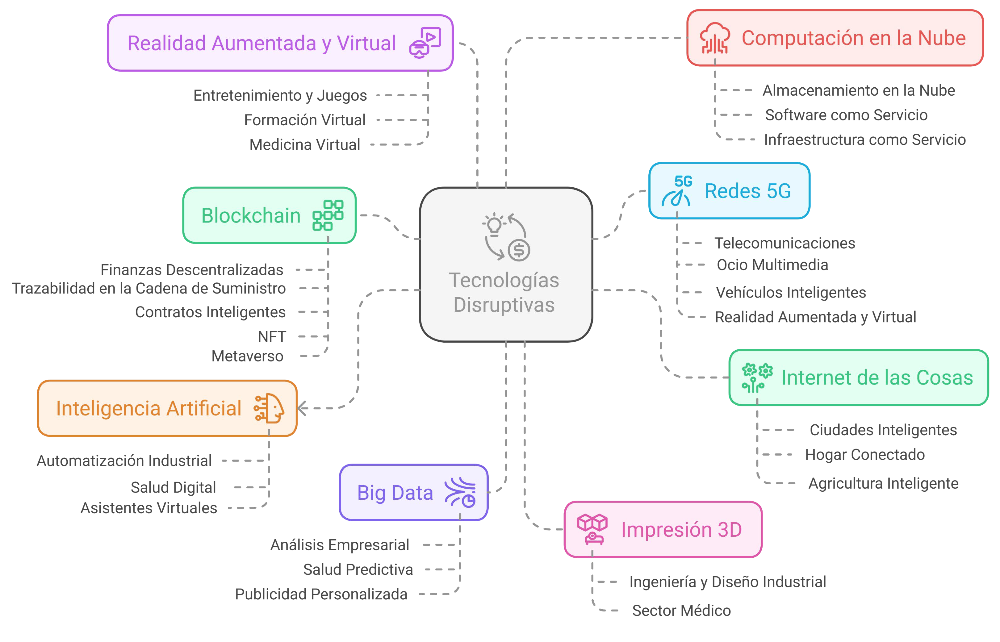

Apuntes
Índice
Introducción
En este tema vamos a ves los conceptos clave y las implicaciones de las Tecnologías Habilitadoras Digitales (THD) y su impacto en la transformación digital de las empresas. Se abordan las principales THD, su aplicación en diversos sectores, la transición de la Industria 4.0 a la Industria 5.0, el impacto transversal de estas tecnologías, su papel en retos globales, la economía circular y los modelos de negocio sostenibles, los mercados generados por las THD, las tecnologías habilitadoras emergentes y las conclusiones finales.
Definición y Propósito de las Tecnologías Habilitadoras Digitales (THD)

Las THD son definidas como el "motor de la transformación digital" y permiten la "automatización, la optimización y evolución de los sectores productivos." Van más allá de la simple innovación y generación de empleo, planteando también "nuevos desafíos y nuevos riesgos."
El objetivo principal de este bloque del curso es "caracterizar las tecnologías habilitadoras digitales necesarias para la adecuación y transformación de las empresas a entornos digitales, describiendo cuáles son sus características y aplicaciones."
Descripción de las Principales Tecnologías Habilitadoras Digitales

El audio enumera y describe brevemente las siguientes THD:
- Internet de las Cosas (IoT): Conecta dispositivos para recopilar y compartir datos en tiempo real, facilitando la automatización y el control de procesos. "El internet de las cosas que conecta dispositivos para recopilar y compartir datos en tiempo real, facilitando la automatización y y el control de procesos."
- Inteligencia Artificial (IA): Dota a los sistemas de capacidades cognitivas similares a las humanas, optimizando procesos y mejorando la toma de decisiones. "La inteligencia artificial que dota los sistemas de capacidades cognitivas, de alguna manera similares a las humanas, optimizando procesos y mejorando la toma de decisiones."
- Big Data y Analítica: Procesan grandes volúmenes de datos extrayendo patrones e información útil para la toma de decisiones estratégicas. "El big data y la analítica que son utilizados para procesar grandes volúmenes de datos extrayendo patrones e información que es útil para la toma de decisiones estratégicas."
- Blockchain: Garantiza la seguridad y la trazabilidad de transacciones digitales, evitando fraudes y mejorando la transparencia. "El blockchain garantiza la seguridad y la tracebilidad de transacciones digitales, evitando fraudes y, como veremos, mejorando la transparencia."
- Computación en la Nube: Proporciona acceso remoto a recursos informáticos, facilitando la escalabilidad y flexibilidad en la gestión de datos y aplicaciones. "Una computación en la nube que se encarga de proporcionar acceso remoto a recursos informáticos, facilitando la escalabilidad y la flexibilidad en la gestión tanto de datos como de aplicaciones."
- Realidad Aumentada (RA) y Realidad Virtual (RV): Enriquecen la interacción con entornos digitales, aplicándose en formación, entretenimiento y asistencia técnica. "La realidad aumentada y la realidad virtual. Ambas enriquecen la interacción con entornos digitales, aplicándose sobre todo en formación, entretenimiento y también asistencia técnica."
- Impresión 3D: Revoluciona la fabricación permitiendo la producción rápida y personalizada de objetos físicos. "La impresión 3D que revoluciona la fabricación permitiendo la producción rápida y personalizada de objetos físicos."
- Ciberseguridad (IT y OT): Protege sistemas y datos en entornos interconectados, minimizando riesgos en infraestructuras críticas. "La ciberseguridad en IT y OT que se encarga de proteger sistemas y datos en entornos interconectados, minimizando riesgos en infraestructuras críticas."
- Gemelos Digitales: Permiten la simulación y optimización de sistemas físicos a través de modelos virtuales en tiempo real. "Los gemelos digitales que permiten la simulación y la optimización de sistemas físicos a través de modelos virtuales en tiempo real."
- Robótica Colaborativa (Cobótica): Introduce robots que trabajan junto a humanos mejorando la eficiencia y la seguridad en procesos industriales. "La robótica colaborativa, también llamadaótica, que introduce robots que trabajan junto a humanos mejorando la eficiencia y la seguridad en los procesos industriales."
- Redes 5G: Proporcionan conectividad ultra rápida y de baja latencia, impulsando la digitalización y el desarrollo en loT. "Las redes 5G, que son utilizadas para proporcionar conectividad ultra rápida y de baja latencia, impulsando la ización y el desarrollo sobre todo en loT."
Transición de la Industria 4.0 a la Industria 5.0

La evolución de estas tecnologías ha impulsado el paso de la Industria 4.0 (basada en la automatización) a la Industria 5.0. La Industria 5.0 se caracteriza porque "la tecnología no solo optimiza procesos, sino que también genera conocimiento y toma de decisiones de forma autónoma."
Impacto Transversal de las THD
Las THD no solo transforman sectores productivos, sino que "redefinen la manera en que las empresas operan e innovan en la era digital." Son clave para el "crecimiento económico, la generación de empleo y la innovación en múltiples sectores." Su transversalidad las convierte en un factor "estratégico para la competitividad y el desarrollo sostenible."
Aplicaciones Específicas de las THD en Diversos Sectores
- IoT: Automatización y eficiencia en industria, salud y transporte.
- 5G: Conectividad ultra rápida esencial para movilidad, industria digital, comercio y medicina digital.
- Computación en la Nube: Creación de aplicaciones seguras y almacenamiento de datos accesibles.
- Big Data y Analítica: Generación de valor en economía digital y gestión pública.
- Ciberseguridad: Protección de sistemas digitales, privacidad, identidad y resiliencia en infraestructuras críticas.
- Aplicaciones Móviles: Transformación de sectores como el turismo.
Rol de las THD en Retos Globales
Las THD desempeñan un papel clave en la "gestión medioambiental, la eficiencia energética, la digitalización cultural o el desarrollo de sistemas de transportes inteligentes." La transformación digital no solo impulsa la innovación, sino que también "redefine la economía, los servicios y la sostenibilidad a nivel global."
La Economía Circular y los Modelos de Negocio Sostenibles

Se contrasta la economía lineal (producir, usar y desechar) con la economía circular (reutilización, reciclaje y optimización). Las THD juegan un papel clave al "facilitar modelos de producción que son más sostenibles, impulsando la automatización, la monitorización de recursos y el desarrollo de soluciones que son innovadoras."
Se describen estrategias de modelos de negocio sostenibles como la extensión de la vida del producto, el producto como servicio, la producción "just in time", la simbiosis industrial, el ecodiseño y el uso de materiales reciclables y biodegradables.
La digitalización permite la "monitorización en tiempo real de los procesos, la trazabilidad de materiales y la optimización de recursos mediante inteligencia artificial o análisis de datos." La adopción de modelos de negocio sostenibles no solo responde a una necesidad ambiental, sino que también genera una "ventaja competitiva."
Mercados Generados por las THD

Las THD han impulsado la aparición de "nuevos sectores y modelos de negocio, transformando industrias tradicionales y creando oportunidades que antes eran impensables."
Se mencionan ejemplos concretos:
- IoT: Ciudades inteligentes, hogar conectado, agricultura inteligente.
- IA: Automatización industrial, salud digital, asistentes virtuales.
- Big Data: Publicidad personalizada, salud predictiva.
- Blockchain: Finanzas descentralizadas, trazabilidad de la cadena de suministro, contratos inteligentes, metaverso.
- Computación en la Nube: Software como servicio (SaaS), infraestructura como servicio (laas).
- Redes 5G: Auge del contenido multimedia, vehículos inteligentes, optimización de RA/RV.
- RA/RV: Entretenimiento, videojuegos, formación virtual, medicina digital.
- Impresión 3D: Ingeniería y diseño industrial, sector médico (prótesis, modelos anatómicos).
La convergencia de estas innovaciones marca el camino hacia una "economía digital interconectada y que está en constante evolución."
Tecnologías Habilitadoras Emergentes

Estas tecnologías están configurando un nuevo panorama de innovación.
Se mencionan:
- Nanotecnología: Manipulación de materiales a nivel molecular (ej: grafeno).
- Micro y Nanoelectrónica: Miniaturización de dispositivos (wearables, IoT, computación cuántica).
- Biotecnología Industrial: Bioplásticos, bioenergía, agricultura sostenible.
- Fotónica: Iluminación, comunicaciones ópticas, sensores de alta precisión.
- Materiales Avanzados: Estructuras más resistentes y ligeras (aeroespacial, paneles solares).
- Tecnologías de Fabricación Avanzada: Impresión 3D, robótica colaborativa (procesos más flexibles y eficientes).
Estas tecnologías emergentes están "sintiendo las bases de una economía que es más innovadora, sostenible y adaptada a los desafíos del futuro."
Conclusiones Finales
Las THD son el "motor fundamental de la transformación digital." Han permitido la "digitalización de productos y servicios, mejorando la eficiencia y la competitividad." La convergencia entre IT y OT ha optimizado procesos industriales. La computación en la nube, el big data y la ciberseguridad refuerzan la infraestructura digital. La transformación digital impacta la sostenibilidad económica y ambiental, impulsando la economía circular. Las THD han generado "nuevos mercados y oportunidades económicas," dando lugar a industrias emergentes. El futuro se dirige hacia la adopción de THD emergentes con avances disruptivos. En definitiva, las THD están "sentando las bases de una economía más sostenible, interconectada y resiliente." Su impacto transformará la producción, el consumo y la concepción del progreso y bienestar global.
Las THD son el motor de la transformación digital.
Las THD han permitido la digitalización de productos y servicios
Las THD generan un impacto sobre la sostenibilidad económica y ambiental.
Las THD sientan las bases para una economía más sostenible, interconectada y resiliente.
El futuro de la transformación digital se encamina hacia la adopción de THD emergentes
Citas Destacadas
- "Las tecnologías habilitadoras digitales son el motor de la transformación digital."
- "La tecnología no solo optimiza procesos, sino que también genera conocimiento y toma de decisiones de forma autónoma." (Referido a la Industria 5.0)
- "Las tecnologías habilitadoras digitales son clave para el crecimiento económico, la generación de empleo y la innovación en múltiples sectores."
- "La adopción de modelos de negocio sostenibles no solo responde a una necesidad ambiental, sino que también se traduce en una ventaja competitiva."
Implicaciones y Próximos Pasos
Es fundamental comprender las características y aplicaciones de las diversas THD para la adecuación y transformación digital de las empresas. Las empresas deben estar atentas a la evolución de la Industria 5.0 y cómo la autonomía en la toma de decisiones por parte de la tecnología puede impactar sus operaciones. La adopción de modelos de negocio sostenibles, habilitados por la digitalización, se presenta como una oportunidad para mejorar la eficiencia y obtener una ventaja competitiva. El seguimiento y la inversión en tecnologías habilitadoras emergentes serán cruciales para la innovación y el desarrollo futuro.<>